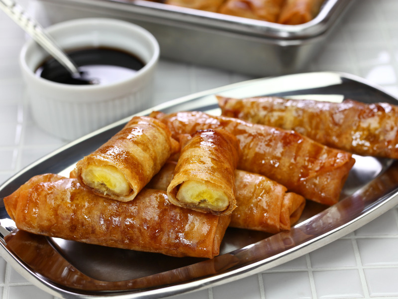

How to make Lumpiang Turon
ingredients:
- 6-8 ripe saba bananas (or substitute with regular bananas)
- 1 cup jackfruit, sliced (optional)
- 1 cup brown sugar
- Lumpia wrappers (spring roll wrappers)
- Cooking oil (for frying)
Instructions:
- Prepare the Ingredients:
- Peel the saba bananas and cut them in half lengthwise if they are large. If using regular bananas, slice them into thin strips.
- If using jackfruit, cut it into thin strips.
- Coat the Bananas:
- Place the brown sugar in a shallow dish.
- Roll each banana (and jackfruit if using) in the brown sugar until it is evenly coated.
- Wrap the Bananas:
- Place a lumpia wrapper on a clean surface, with one corner pointing towards you.
- Lay a sugar-coated banana (and jackfruit if using) diagonally in the center of the wrapper.
- Fold the sides of the wrapper over the banana, then roll it up tightly from the bottom corner.
- Seal the edge of the wrapper with a little bit of water or beaten egg to keep it from unraveling.
- Heat the Oil:
- Heat about 2 inches of cooking oil in a pan over medium heat. You can test if the oil is ready by dropping a small piece of wrapper in—it should sizzle and rise to the surface.
- Fry the Turon:
- Fry the wrapped bananas in batches, being careful not to overcrowd the pan.
- Cook each side for about 2-3 minutes or until the wrappers are golden brown and crispy.
- Use a slotted spoon to remove the turon from the oil and drain on paper towels.
- Serve:
- Let the turon cool slightly before serving. They are best enjoyed warm, with the caramelized coating still crisp.
Enjoy your delicious, homemade Lumpiang Turon!
Go back?
Home